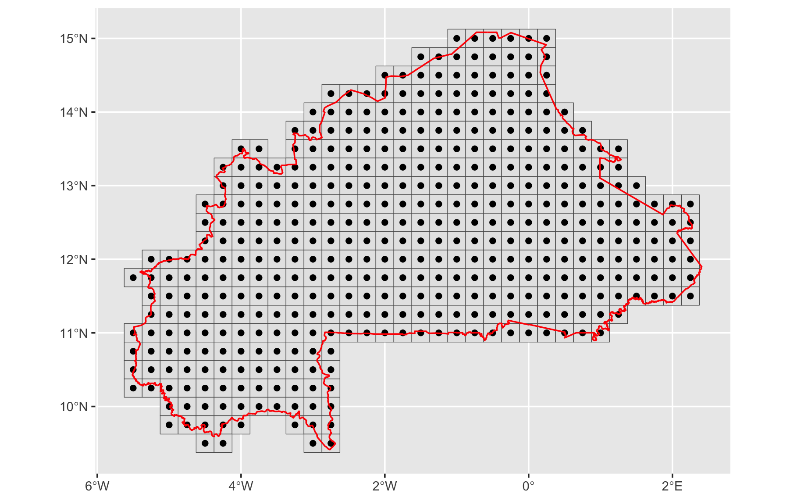

This vignette describes the complete pipeline for running
AquaCrop simulations across Burkina Faso using gridded
ERA5 data and the aquacroptools package. AquaCrop (Steduto
et al., 2009; Raes et al., 2009) is the FAO reference model for
simulating crop yield response to water stress. The package automates
the entire file-based workflow — input file generation, batch
simulation, and output parsing — while always delegating computation to
the official FAO binary, ensuring full scientific validity.
The workflow is divided into five steps:
process_climate — Preprocess ERA5
climate data and build the simulation gridprocess_soil — Extract soil properties
from HWSDwrite_inputs — Write all AquaCrop
input files in batchrun_aquacrop — Launch simulationsproject/
├── RAWDATA/
│ ├── climate/ # Raw ERA5 NetCDF files
│ │ ├── BF_PCP_day.nc
│ │ ├── BF_TX_day.nc
│ │ ├── BF_TN_day.nc
│ │ └── BF_ETO_day.nc
│ ├── soil/
│ │ └── hwsd_wa_usda_all_layers.tif
│ └── shapefiles/
│ └── bfa_admbnda_adm0_igb_20200323.shp
├── DATA/
│ ├── climate/ # Masked GeoTIFFs + final CSV
│ ├── soil/ # Soil CSV per grid cell
│ └── shapefiles/ # ERA5 grid (pts_grid.shp)
├── SRC/
│ └── hwsdb_helpers.R # HWSD utility functions
├── CLIMATE/ # .PLU .Tnx .ETo .CLI (generated)
├── CROP/ # .CRO (generated)
├── SOIL/ # .SOL .SW0 (generated)
├── MANAGEMENT/ # .MAN .IRR (generated)
├── CAL/ # .CAL onset calendars (optional)
├── LIST/ # .PRM project files (generated)
└── RESULTS/ # AquaCrop outputs (generated)init_aquacrop() creates the standard AquaCrop folder
structure and downloads the official FAO binary for your operating
system. Run this once per project.
init_aquacrop(path = "my-project", version = "7.2")This opens a new RStudio project with a readme.txt
explaining the directory layout.
process_climate)
ERA5 data are provided in NetCDF format at a spatial resolution of 0.25° (~28 km). This step clips the rasters to the Burkina Faso boundary, builds the simulation grid, and exports a tidy CSV ready for AquaCrop.
shp <- st_read("RAWDATA/shapefiles/bfa_admbnda_adm0_igb_20200323.shp")A generic function processes all four variables identically. It reads the NetCDF, clips it to the shapefile extent, masks pixels outside the country boundary, and writes the result as a GeoTIFF.
process_raster <- function(var_name, shp) {
input_file <- sprintf("RAWDATA/climate/BF_%s_day.nc", var_name)
output_file <- sprintf("DATA/climate/BF_%s_day_msk.tif", var_name)
rast(input_file) |>
crop(shp) |>
mask(mask = shp) |>
writeRaster(filename = output_file, overwrite = TRUE)
message(sprintf("v %s processed", var_name))
}
walk(
.x = c("PCP", "TX", "TN", "ETO"),
.f = process_raster,
shp = shp
)ERA5 units:
PCP(tp) andETO(evspsblpot) are in m/day in raw ERA5 — multiply by 1000 to obtain mm/day. Temperature variables (t2m) should already be in °C in the provided NetCDF files.
Valid pixel coordinates from the masked TX raster define grid cell
centres. Each pixel becomes an sf point identified by a
station name (grid_001, grid_002, …).
pts <- rast("DATA/climate/BF_TX_day_msk.tif") |>
as_tibble(xy = TRUE) |>
drop_na() |>
select(x, y) |>
mutate(station = sprintf("grid_%03d", 1:nrow(.))) |>
st_as_sf(coords = c("x", "y"), crs = 4326)
# Square grid at 0.25° (ERA5 resolution)
pts_grid <- st_grid(x = pts, cellsize = 0.25, square = TRUE)
write_sf(pts_grid, "DATA/shapefiles/pts_grid.shp")Visualise the grid over the country boundary. Run the block below once in your R session (outside the vignette) to produce the figure file:
ggplot() +
geom_sf(data = pts_grid) +
geom_sf(data = pts) +
geom_sf(data = shp, fill = NA, color = "red", lwd = 0.5) +
coord_sf() +
labs(
title = "ERA5 Grid (0.25 deg) - Burkina Faso",
subtitle = sprintf("%d simulation cells", nrow(pts))
) 
Each raster is pivoted to long format. Band indices map to actual dates from the 1981–2020 time sequence.
A helper function avoids repeating the same pivot logic for each variable:
pivot_raster <- function(tif_path, value_name, prefix_to_remove) {
rast(tif_path) |>
as_tibble(xy = TRUE) |>
drop_na() |>
mutate(station = sprintf("grid_%03d", 1:nrow(.)), .after = y) |>
pivot_longer(
cols = -c(station, x, y),
names_to = "date",
values_to = value_name
) |>
mutate(
date = str_remove_all(date, prefix_to_remove),
date = dates[as.numeric(date)],
year = year(date),
month = month(date),
day = day(date),
.after = date
) |>
select(-c(x, y, date))
}Apply to each variable and join:
tn_df <- pivot_raster("DATA/climate/BF_TN_day_msk.tif", "tmin", "t2m_")
tx_df <- pivot_raster("DATA/climate/BF_TX_day_msk.tif", "tmax", "t2m_")
pcp_df <- pivot_raster("DATA/climate/BF_PCP_day_msk.tif", "rain", "tp_")
eto_df <- pivot_raster("DATA/climate/BF_ETO_day_msk.tif", "et0", "evspsblpot_")
weather_df <- left_join(tn_df, tx_df) |>
left_join(pcp_df) |>
left_join(eto_df)
weather_df |>
mutate(across(5:8, \(x) round(x, 1))) |>
write_csv("DATA/climate/climate_grid_data.csv")The output climate_grid_data.csv contains the following
columns:
| Column | Unit | Description |
|---|---|---|
| station | — | Grid cell ID (grid_XXX) |
| year | — | Year |
| month | — | Month |
| day | — | Day |
| tmin | °C | Daily minimum temperature |
| tmax | °C | Daily maximum temperature |
| rain | mm/day | Precipitation |
| et0 | mm/day | Penman-Monteith reference ETo |
process_soil)
Soil data come from the HWSD (Harmonized World Soil
Database), pre-processed as USDA textural class codes (1–12) for West
Africa. Hydraulic properties are derived automatically from texture via
pedotransfer functions (Saxton & Rawls, 2006) inside
write_sol_batch().
hwsdb_helpers.R)
Two functions are sourced from SRC/hwsdb_helpers.R.
num_to_usda(texture, to) converts an
HWSD numeric code (1–12) to one of three text formats:
to argument |
Output example | Typical use case |
|---|---|---|
"abr" |
"Lo", "Sa"
|
AquaCrop input files |
"name" |
"loam", "sand"
|
English reports |
"name_fr" |
"limon", "sable"
|
French bulletins for stakeholders |
num_to_usda <- function(texture = 1, to = "abr") {
if (to == "abr") {
dplyr::case_when(
texture == 1 ~ "Cl", texture == 2 ~ "SiCl",
texture == 3 ~ "SaCl", texture == 4 ~ "ClLo",
texture == 5 ~ "SiClLo", texture == 6 ~ "SaClLo",
texture == 7 ~ "Lo", texture == 8 ~ "SiLo",
texture == 9 ~ "SaLo", texture == 10 ~ "Si",
texture == 11 ~ "LoSa", texture == 12 ~ "Sa",
.default = NA_character_
)
} else if (to == "name_fr") {
dplyr::case_when(
texture == 1 ~ "argile", texture == 2 ~ "argile limoneuse",
texture == 3 ~ "argile sableuse", texture == 4 ~ "limon argileux",
texture == 5 ~ "limon argileux fin", texture == 6 ~ "limon argilo-sableux",
texture == 7 ~ "limon", texture == 8 ~ "limon fin",
texture == 9 ~ "limon sableux", texture == 10 ~ "limon tres fin",
texture == 11 ~ "sable limoneux", texture == 12 ~ "sable",
.default = NA_character_
)
} else {
dplyr::case_when(
texture == 1 ~ "clay", texture == 2 ~ "silty clay",
texture == 3 ~ "sandy clay", texture == 4 ~ "clay loam",
texture == 5 ~ "silty clay loam", texture == 6 ~ "sandy clay loam",
texture == 7 ~ "loam", texture == 8 ~ "silty loam",
texture == 9 ~ "sandy loam", texture == 10 ~ "silt",
texture == 11 ~ "loamy sand", texture == 12 ~ "sand",
.default = NA_character_
)
}
}.get_mode(x) returns the dominant
(modal) texture value within a grid cell. Ties are broken by returning
the first encountered value.
grid_shp <- read_sf("DATA/shapefiles/pts_grid.shp")
soilc <- rast("RAWDATA/soil/hwsd_wa_usda_all_layers.tif") |> crop(grid_shp)
soil_df <- terra::extract(soilc, grid_shp, fun = .get_mode)
soil_df2 <- grid_shp |>
bind_cols(soil_df) |>
relocate(geometry, .after = everything()) |>
st_drop_geometry() |>
select(-ID) |>
mutate_if(is.double, num_to_usda, to = "name") |>
pivot_longer(
cols = -station,
names_to = "thickness",
values_to = "texture"
) |>
mutate(
thickness = ifelse(thickness %in% c("D6", "D7"), 0.5, 0.2),
cn = 46,
rew = 5
)
write_csv(soil_df2, "DATA/soil/hwsd_grids.csv")HWSD layer depths: Layers D6 and D7 are assigned 0.5 m thickness; all other layers are 0.2 m. This controls the soil profile depth fed to AquaCrop.
The output hwsd_grids.csv contains the following
columns:
| Column | Description |
|---|---|
| station | Grid cell ID (grid_XXX) |
| thickness | Layer thickness (m): 0.2 or 0.5 |
| texture | USDA textural class (full English name) |
| cn | Curve Number (default: 46) |
| rew | Readily Evaporable Water, mm (default: 5) |
write_inputs)
All AquaCrop input files are generated in batch mode for every grid cell, with no manual editing required.
.PLU, .Tnx,
.ETo, .CLI)
The climate CSV is split by station; each subset is written into the four AquaCrop climate files required per site.
datal <- read_csv("DATA/climate/climate_grid_data.csv") |>
group_split(station, .keep = TRUE)
tic("Writing climate files")
walk(datal, write_climate, path = "CLIMATE/")
toc()
# → CLIMATE/grid_XXX.PLU (rainfall)
# → CLIMATE/grid_XXX.Tnx (min/max temperature)
# → CLIMATE/grid_XXX.ETo (reference ET)
# → CLIMATE/grid_XXX.CLI (master file).CRO)
Default parameters are built in for all AquaCrop crops. Override
individual parameters via params = list(...), using the
AquaCrop variable identifier as the name.
.SOL + .SW0)
HWSD data are converted to a list of parameters per station.
NA texture values (undefined pixels) are replaced by
"impermeable".
params_list <- read_csv("DATA/soil/hwsd_grids.csv") |>
mutate(texture = replace_na(texture, "impermeable")) |>
group_split(station, .keep = FALSE) |>
map(as.list)
write_sol_batch(
site_name = NULL, # auto-discover all sites
params = params_list,
write_sw0 = TRUE,
initial_water = "WP", # initial soil water content = wilting point
salinity = "none",
initial_cc = -9.00,
initial_biomass = 0.000,
initial_root_depth = -9.00,
bund_water = 0.0,
bund_ec = 0.00,
swo_layers = NULL,
clean = TRUE
)
# → SOIL/grid_XXX.SOL
# → SOIL/grid_XXX.SW0.MAN)
Field management parameters are applied uniformly across all grid cells.
write_man_batch(
site_name = NULL,
params = list(
var_03 = 20, # Mulch cover (%)
var_04 = 60, # Evaporation reduction from mulch (%)
var_05 = 50 # Soil fertility level (%)
),
clean = TRUE
)
# → MANAGEMENT/grid_XXX.MAN.IRR)
create_irr_schedule() builds the schedule data frame
defining trigger thresholds and application depths for successive crop
periods, which is then passed to write_irr_batch().
schedule <- create_irr_schedule(
from_day = c(1, 41, 116),
time_crit = c(3, 7, 999), # interval (days) per period
depth_crit = c(10, 40, 0), # application depth (mm) per period
ecw = c(0.4, 0.6, 0.8), # irrigation water EC (dS/m) per period
time_crit_code = 1, # fixed interval
depth_crit_code = 2 # fixed depth
)| Phase | Days | Interval | Depth (mm) | ECw (dS/m) |
|---|---|---|---|---|
| Establishment | 1 – 40 | 3 days | 10 | 0.4 |
| Crop growth | 41 – 115 | 7 days | 40 | 0.6 |
| Late season | 116+ | — | 0 | 0.8 |
write_irr_batch(
path = "MANAGEMENT/",
site_name = NULL,
method = 1, # 1 = sprinkler
wet_surface = 100, # 100% wetted surface
mode = 2, # mode = generated schedule
irr_data = schedule
)
# → MANAGEMENT/grid_XXX.IRR.CAL) — optional
In rainfed systems, planting dates typically depend on seasonal
rainfall onset. write_cal_batch() defines the onset
criterion; find_onset() is then called internally by
write_prm_batch() to derive site-specific planting dates
from the climate record.
write_cal_batch(
site_name = NULL,
onset = "rainfall",
window_start = 121, # search starts at DOY 121 (1 May)
window_length = 92, # 92-day search window
criterion = 4, # cumulative rainfall criterion
preset_value = 50, # 50 mm threshold
occurrences = 1
)
# → CAL/grid_XXX.CAL.PRM)
Option A — Fixed planting date (DOY 161, 10 June) applied uniformly:
plsch <- data.frame(year = 1981:2020, planting_doy = 161)
write_prm_batch(
site_name = NULL,
crop_name = "maize90days",
planting_schedule = plsch,
crop_duration = 90,
clean = TRUE
)
# → LIST/grid_XXX.PRMOption B — Onset-based planting date derived from rainfall calendars (requires step 4.6):
write_prm_batch(
site_name = NULL,
crop_name = "maize90days",
calendar_path = "CAL/", # onset calendars from step 4.6
crop_duration = 90,
clean = TRUE
)
# → LIST/grid_XXX.PRMFixed vs onset-based planting: DOY 161 is appropriate for regional analyses with a uniform sowing assumption. For rainfed simulations that account for inter-annual variability in season onset, use Option B together with
write_cal_batch().
run_aquacrop() automatically discovers all
.PRM files in LIST/ and runs AquaCrop for each
site × year combination.
tic("Full AquaCrop simulation")
run_aquacrop()
toc()Test on a subset first. For ~100 grid cells × 40 years, runtime can range from minutes to hours. Validate the full pipeline on a few stations before launching the complete run:
walk(datal[1:5], write_climate, path = "CLIMATE/") run_aquacrop()
All climate and calendar input files can be read back into tidy data frames for inspection, post-processing, or visualisation.
# Climate inputs
read_climate("CLIMATE/grid_001.CLI") # master file + all data
read_plu("CLIMATE/grid_001.PLU")
read_tnx("CLIMATE/grid_001.Tnx")
read_eto("CLIMATE/grid_001.ETo") # alias: read_et0()
# Onset calendar
read_cal("CAL/grid_001.CAL")| Folder | Files | Description |
|---|---|---|
DATA/climate/ |
climate_grid_data.csv |
Daily climate data per cell |
DATA/soil/ |
hwsd_grids.csv |
Soil properties per cell |
DATA/shapefiles/ |
pts_grid.shp |
Spatial ERA5 grid |
CLIMATE/ |
grid_XXX.PLU/Tnx/ETo/CLI |
AquaCrop climate files |
CROP/ |
maize90days.CRO |
Crop parameters |
SOIL/ |
grid_XXX.SOL, grid_XXX.SW0
|
Soil profile + initial water |
MANAGEMENT/ |
grid_XXX.MAN, grid_XXX.IRR
|
Field management + irrigation |
CAL/ |
grid_XXX.CAL |
Onset calendars (optional) |
LIST/ |
grid_XXX.PRM |
Simulation project files |
RESULTS/ |
grid_XXX_YYYY.* |
AquaCrop simulation outputs |
| File type | Single-site writer | Batch writer | Reader |
|---|---|---|---|
| Climate (all) | write_climate() |
— | read_climate() |
| Rainfall | write_plu() |
— | read_plu() |
| Temperature | write_tnx() |
— | read_tnx() |
| Reference ET | write_eto() |
— | read_eto() |
| Crop | write_cro() |
— | — |
| Soil profile | write_sol() |
write_sol_batch() |
— |
| Management | write_man() |
write_man_batch() |
— |
| Irrigation | write_irr() |
write_irr_batch() |
— |
| Irrigation schedule | create_irr_schedule() |
— | — |
| Onset calendar | write_cal() |
write_cal_batch() |
read_cal() |
| Project file | write_prm() |
write_prm_batch() |
— |
#> R version 4.5.2 (2025-10-31)
#> Platform: x86_64-apple-darwin20
#> Running under: macOS Ventura 13.7.8
#>
#> Matrix products: default
#> BLAS: /Library/Frameworks/R.framework/Versions/4.5-x86_64/Resources/lib/libRblas.0.dylib
#> LAPACK: /Library/Frameworks/R.framework/Versions/4.5-x86_64/Resources/lib/libRlapack.dylib; LAPACK version 3.12.1
#>
#> locale:
#> [1] en_US.UTF-8/en_US.UTF-8/en_US.UTF-8/C/en_US.UTF-8/en_US.UTF-8
#>
#> time zone: Africa/Ouagadougou
#> tzcode source: internal
#>
#> attached base packages:
#> [1] stats graphics grDevices utils datasets methods base
#>
#> loaded via a namespace (and not attached):
#> [1] digest_0.6.39 desc_1.4.3 R6_2.6.1 fastmap_1.2.0
#> [5] xfun_0.56 cachem_1.1.0 knitr_1.51 htmltools_0.5.9
#> [9] rmarkdown_2.30 lifecycle_1.0.5 cli_3.6.5 sass_0.4.10
#> [13] pkgdown_2.2.0 textshaping_1.0.4 jquerylib_0.1.4 systemfonts_1.3.1
#> [17] compiler_4.5.2 rstudioapi_0.18.0 tools_4.5.2 ragg_1.5.0
#> [21] bslib_0.10.0 evaluate_1.0.5 yaml_2.3.12 otel_0.2.0
#> [25] jsonlite_2.0.0 htmlwidgets_1.6.4 rlang_1.1.7 fs_1.6.6